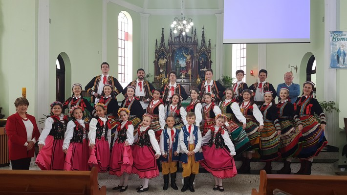
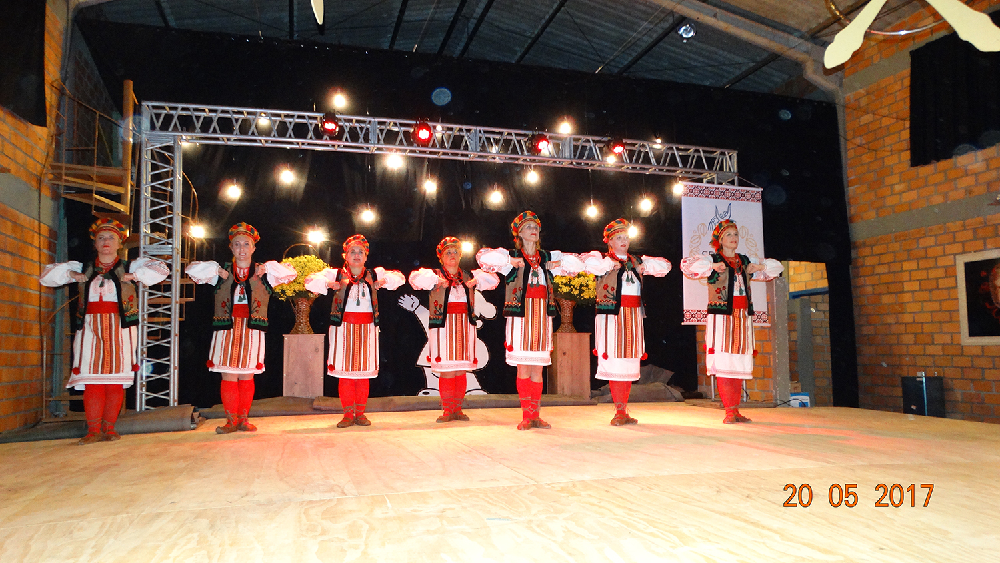

Mallet é um municipio localizado no interior do Paraná. A cidade contém aproximadamente 13.697 habitantes.
Pouco conhecida, porém rica em cultura, aqui contém diversas peculiaridades próprias trazidas da imigração de Poloneses e Ucranianos.
Somado a isso, a religião católica marca presença forte na cidade, tendo inclusive duas igrejas distintas, uma com origem polonesa e outra com origem ucraniana.
A igreja de são Miguel Arcanjo é primeira igreja ucraniana do Brasil, construída em 1901, sob a direção do padre de origem ucraniana Nikon Rodolzkie.
É um patrimônio cultural do Paraná, sendo frequentemente cultuado ainda pelas pessoas da região, principalmente aquelas que tem origem ucraniana.
Para mais informações sobre a igreja de São Miguel Arcanjo, você pode acessar esse link:
Na questão de educação, Mallet contém diversas escolas municipais, por exemplo:
Na parte industrial, Mallet possui uma grande industria, chamada SEPAC. Foi fundada na década de 60, pelos irmãos médicos Dr.Almicar Dias e Dr.João Dias. Inicialmente, a empresa surgiu como SEPAC Papel e Celulose, que realizou um cisão em 2001, e com toda sua cooperação florestal, tornou-se AGROSEPAC.
A indústria tem papel fundamental da cidade, fornecendo emprego a diversos moradores e alavancando a cidade no seu desenvolviomento, com desenvolvimento de novos asfaltos, projetos suntentáveis, investimento e lucro para a cidade.
Para conhecer melhor como é a SEPAC, fica o seguinte link:
Retornando as antigas tradições e a imigração de povos Poloneses e Ucranianos, temos os grupos folclóricos Mazury e Spomen.


O grupo folclórico polones Mazury, é uma associação Cultural sem fins lucrativos, com a finalidade de preservar e compartilhar as tradições polonesas presentes no Paraná.
O grupo foi fundado em 1993, chamando-se Mazury em homenagem aos imigrantes que vieram para o Brasil da região da Masúria(Mazury), área do nordeste polones com bastante lagos e florestas.
Para conhecer melhor o grupo, segue o link: mazury
O grupo Spomen é mais recente, fundado em 2002. O grupo tem como objetivo a divulgação da cultura Ucraniana presente na região, danças e vestimentas típicas. Já foram expor suas danças internacionalmente, e ganharam diversos premios por suas apresentações.